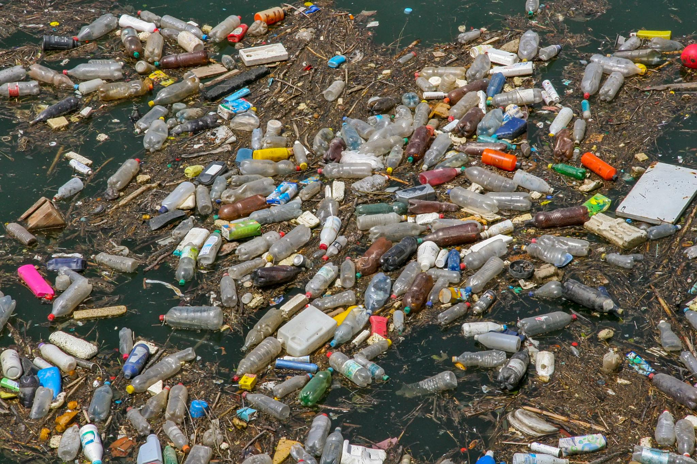

01
Aliran Air Tersumbat
Sampah yang menumpuk dapat menghambat aliran air dan memperparah genangan.
ALIR mengajak kita menghentikan kebiasaan membuang sampah ke sungai. Karena sungai yang bersih adalah langkah menuju lingkungan yang lebih aman dan bebas dari ancaman banjir.
Temukan Solusi →
SAMPAH SUNGAI, ANCAMAN BAGI LINGKUNGAN.
Jangan biarkan sampah menghambat aliran air.
Sampah di sungai.
Ancaman nyata bagi kita.
Sampah yang menumpuk dapat menghambat aliran air dan memperparah genangan.
Sungai yang tersumbat dapat meningkatkan risiko banjir saat hujan deras.
Sampah mencemari air dan mengancam kehidupan ikan serta makhluk sungai lainnya.
01 — Buang sampah pada tempatnya.
02 — Kurangi plastik sekali pakai.
03 — Ikut kegiatan bersih sungai.
04 — Laporkan tumpukan sampah kepada pihak terkait.
EARTH//ZERO merupakan media edukasi lingkungan yang mengajak masyarakat lebih peduli terhadap sampah sungai dan pentingnya menjaga aliran air untuk mengurangi risiko banjir.